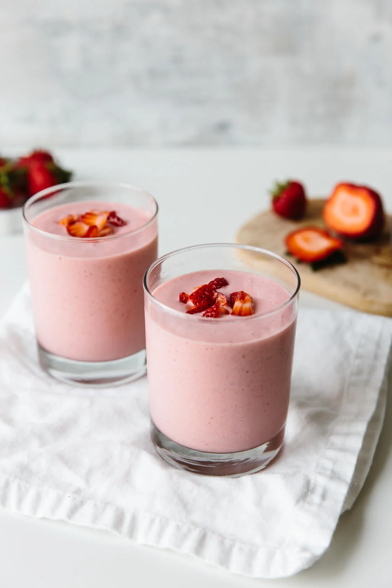

Strawberry-Banana Smoothie
Back to home

Description:
This type of smoothie has a been a go-to for me since the days when self-picked strawberries were affordable.
Ingredients:
Servings: 1–2
Basic ingredients:
- 1 cup frozen strawberries
- 1 ripe banana, peeled
- 1 cup milk of choice (with more added as needed)
"Optional" add-ins:
- Plain or flavoured Greek yogurt
- Large handful of spinach
- Other frozen fruits
- 1/2–1 tbsp ground flaxseed
- 1/2–1 tbsp chia seeds
- Peanut butter or PB powder
- Protein powder, flavoured or unflavoured
- 1 tbsp quick or rolled oats
- Cocoa powder
- Sweetener of any kind
- Ice
Steps:
- Add all ingredients to an adequately sized blender. Blend.
- If the ingredients are not blending well or the smoothie is clearly too thick, add more milk of choice.
- That's literally it. Genuninely, why are you still here
Back to home